Hubble
Fenomeni Estremi
Buchi neri, supernovae e i misteri più incredibili del cosmo
Cos'è un buco nero?
Cos'è un'eclissi solare?
Perché lo spazio è muto?
Nascita Stellare
La formazione delle stelle e l'evoluzione degli astri
Come nasce una stella?
Formazione pianeti giganti
Sistema Solare
Pianeti, lune e corpi celesti della nostra casa cosmica
Fasi lunari
Meteora vs Cometa
Galassie
Città stellari e strutture su larga scala dell'universo
Cosa sono le galassie?
Cos'è la Via Lattea?
Misura distanze spaziali
